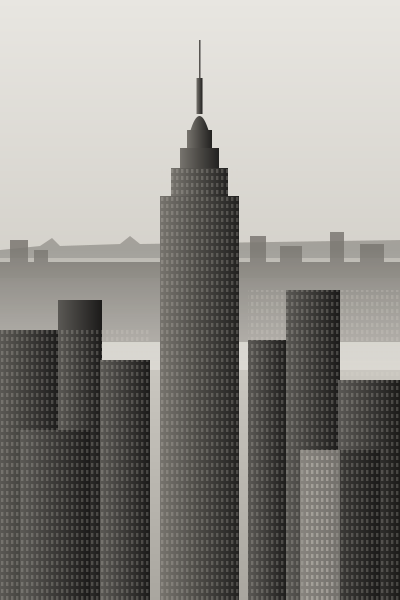

Capital con criterio, no con ruido
En Fischer Investments cada decisión parte de un método. Seleccionamos oportunidades con reglas claras, medimos el riesgo antes que el rendimiento y dejamos que el tiempo trabaje a favor del capital.
En Fischer Investments cada decisión parte de un método. Seleccionamos oportunidades con reglas claras, medimos el riesgo antes que el rendimiento y dejamos que el tiempo trabaje a favor del capital.
Una estrategia sólida cabe en pocas líneas. Definimos entrada, salida y tamaño de posición con anticipación, y evaluamos los resultados con datos, no con emociones.
Como una gran torre, el patrimonio se levanta piso por piso. Nuestro enfoque es crecer de forma sostenida, cuidando los cimientos en cada etapa.

Así entendemos el capital: se diseña, se construye con método y se cuida a lo largo del tiempo.
La ciudad más alta empezó con un cimiento. El patrimonio también.